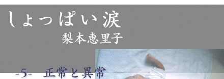

|  | |
| 「確認恐怖症だわね」 目の前の女性医師が書き物をしながら言う。 「それは、どういう……？」 私はごくりと唾を飲み込んだ。 |
|
|
「つまりあなたの今のような状態。玄関の鍵やガスの元栓が閉まっているか、他にも自分の書いた文字や家計簿を間違ってつけていないか、車を運転している時に人を轢いていないか……。人によって様々なんだけれど、生活の中で必要以上に何度も確認してしまう病気なのよ」 ゆっくりと息を吐く。自分のこの症状が病気としてちゃんと認められているなんて驚きだった。同時に少しほっとする気持ちがある。「それで……」女性医師が言う。 「自分ではどうしてそうなったか、わかる？」 私がうなづくと、女性医師が驚いたように目を見開く。 「珍しいわね。理由はわからない人が多いのよ。ごく普通に生活していた人が、いつの間にかそうなってしまったというパターンが多いから」 スカートの裾をにぎりしめ、私は口を開く。 「２年前、水商売をしていたんです。その時、個室で１人のお客さんの接客をしていて、突然後ろから首を締められました」 目の前の水を一口飲む。女性医師は眉を寄せて、私の顔をじっと見た。 「あとから考えれば、そういう性癖があったんでしょうけど、その時には殺されるっていう思いしかなくて恐怖でした。でもその事は自分の中でもう忘れていたんです。少なくとも頭ではそう思っていました。それが半年前、エレベーターの中で男の人に後ろから肩をたたかれて……その人にはただ道を聞かれただけなんですけど、首を締められたことを思い出しました。それから始まったんです」 一息に言い、私は泣きそうになってうつむいた。 「家の中に誰かいるんじゃないかって、何度も確認しちゃうんだ」 柔らかな女性医師の声に、私は二度うなづく。 あれは２年前、20歳の夏のことだった。 「きみ、かわいいね」 店の入口で田辺というお客さんから指名された。白いＹシャツに青のネクタイ、髪は短く刈られていて清潔そうなイメージ。私はそのお客さんと４畳半の個室に入った。 「名前なんて言うの？」 「エリです」 田辺は上から下までなめまわすような視線で私を眺める。 「へー、30分延長するね」 １時間30分の接客代金として４万円受け取った。やった、と心の中でつぶやく。普通なら２万円だから、この金額は破格だ。このパブで働き始めて３カ月だけれど、初めての一番高い客。頑張って接客して常連になってもらおう。背筋をしゃんと伸ばす。 「もっと近くに来てよ」 入口付近に立っていた私に田辺が手招きする。私はうなづいて、田辺の隣に座り、水割りを作る。田辺はスカートの上から私の太股をなでた。でもそれ以上のことは、この店ではできない。田辺もするつもりはないらしく、手を離す。眼鏡の奥の目を細め、人の良さそうな笑顔になった。 「営業マンさんですか？」 水割りを手渡しながら聞く。 「当たり。よくわかったねぇ」 田辺が私の頭をなでる。 「ね、ここってさ、個室の時はもう１名の女の子がつくんじゃないの？ 入口に貼り紙があったけど」 個室の場合は、料金が高い。そのためサービスとして２名以上の女の子がつくことになっている。というのは建前で、本当は客が女の子に手を出さないように１名では入らない原則になっていた。でも今日はピークの金曜日。控室には誰もいず、店長に１人で入ってとお願いされたのだ。 「そうなんですけど、今日は混んでて女の子も出払っちゃって。私１人でもいいですか」 申し訳なさそうな顔で言う。田辺は「もちろん」と笑顔でうなづく。 「俺はエリちゃんと２人きりの方が嬉しいからさ。あっ、そうだ携帯のメールアドレス教えてくれない？」 「いいですよー」私は壁際に置いてあった、小さなバックから携帯を取り出す。テーブルに座っている田辺には背を向ける形になった。「あれ、どうやるんだっけ」つぶやきながら、私はアドレスを画面に表示させようとした。 その時だった。 息がつまった。携帯が手から落ちる。 「静かにしろ」 後ろから田辺の押し殺した声。ぐんぐん首が絞まる。声がでない。恐怖で頭が真っ白になった。「しゃべらないか」という田辺の問いかけに、私は必死でうなづく。田辺は私の首から手を離すと、私の両手をビニールテープでぐるぐる巻き、両目を覆った。 顔に冷たい感触、それが少し下におりてキャミソールから露出した肩に痛みが走った。 「わかるよね、ナイフ。声出したら、刺すから」 私はうなづくことしかできない。それから１時間、暗闇の中で私は田辺に犯され続けた。 精神科を出て、薬局で病院からの薬を受け取り、家へと急いだ。 あの事件があった日、もう二度と夜の仕事はしないと心に決めて、店もすぐに辞めた。私は生きたいと思っている。そんな当たり前のことに気づき、あの日から今日まで強く願ってきた。生きたい、生きたい、生きたい。誰かに殺されたくない。家の中に誰かいないか、殺人者が入ってこないか。いるわけないと、どうしてみんな言い切れるのだろう。 家の中に入ると、激しい確認恐怖に襲われる。台所で料理している時、お風呂で頭を洗っている時、トイレにいる時、私は何度も何度も背後を確認した。それ以外の時は玄関が見える廊下で、玄関から誰も入って来ないことを確認しながら、壁にぴったりと背をくっつけて座っていた。眠る前にはベットの下や押入れの中に誰か潜んでいないか、家の中の鍵がかかっているか、ぐるぐる回って数時間確認した。自分がおかしいことはわかっている。でもやめられないのだ。夫のカズ君は、そんな私を辛そうな目で眺めていた。 「外にいる時は少しラクなんだよね？ じゃあ昼間は外にいた方がいいね」 優しく私を抱きしめてくれる。 １カ月前に編集プロダクションからフリーライターとして独立したものの、とても仕事ができる状況ではない。 「カズ君は私のこと、気持ち悪いとか思わないの？」 彼は黙って首をふる。少し安心したものの、次の瞬間にはまた背後を振り返る。その繰り返しだった。 病院から処方された薬は全く効かなかった。あとの頼みの綱は行動療法だ。簡単に言えば、できるだけ確認をしない。それにより少しずつ恐怖が軽減されていくらしい。でもそれが簡単にできたら、精神病も存在しないと思う。そもそも私は「家の中に誰もいない」と思えないのだ。だって実際にテレビでは家の中で殺される事件が、たくさんあるじゃないか。辛い。確認しても、しなくても辛い。どうすればいいのか、わからないまま時間だけが過ぎた。 ２カ月後、妊娠してしまった。この状態で子供が産めるのか。でも堕ろすことはもっとできそうにないと思いながら、また時間だけが過ぎていく。妊娠３カ月になると、激しいつわりが始まった。ぐわんぐわんと24時間船酔いのような状態が続き、口にできるのはイチゴだけで、体重は６キロ減。立ち上がる気力もなく、１日中ソファの上でぐったりと横になるしかなかった。家の中を確認したくても、確認できない。あとから考えれば、それが行動療法になったのだろう。そんな状態が３カ月続いた。 妊娠６カ月になると、つわりもおさまり、また家の中を確認するようになった。でも前よりは回数もぐんと減ったように思う。ただ心の中は恐怖でいっぱいだった。明日には赤ちゃんごと誰かに殺されるかもしれない。今夜は強盗が入ってくる気がする。そんなことばかり考えていた。 「自宅出産するの？」 臨月になって友達がたずねてくるたびに、驚かれた。 「そう。家での嫌なイメージを変えたくて」 私は笑って答える。家にいることが苦痛だった。でもカズ君と結婚して暮らし始めた、この家を嫌いにはなりたくない。家のイメージも私自身も丸ごと変えたくて、私は自宅出産を決意したのだ。 10月28日。陣痛が始まった。時間が経つごとに、身体の内側から破裂しそうな痛みが増していく。周りのカーテンも床もゆがんで見える。その時、自分が粉々になってしまうような感覚があった。死んでしまったら、この中に溶けてゆくんだろうか。朦朧としながらそんなことを思った。 いざ産む時になって、カズ君がソファに座り、私はその腰につかまって踏ん張った。いつも辛い時に寝そべっていたソファ、嫌なイメージしかない黄色いソファがパワーを放っているように見える。私に力をかして。そう祈って、踏ん張った。家と一つになったような感覚で、身体の全ての温かい臓器が落ちていくようだった。 「おぎゃあ〜」 家の中で大きな声が響き、下を見ると私の身体の中からへその緒が伸びていて、その先に赤ちゃんがいた。その光景は床と天井がひっくり返るほど家の中のイメージが変わって、人間の力を感じた瞬間だった。 清められたと思う。 人は粉々になって死んでいき、こうして生まれ戻ってくる。 翌日は、雲ひとつない透き通るような晴天だった。カズ君はリビングの窓の近くで、今まで見せたことがないような優しい、幸せような顔をして赤ちゃんを抱っこしている。 「神様っているのかもしれないね」 空を見つめながらカズ君が言った。見慣れているはずの風景が、家の中が、光輝いているのを私も感じた。そうだよね、３人家族になったんだよね。胸が熱くなった。これからは大好きなカズ君と、産まれたばかりの赤ちゃんと、この家は私が守っていく。自分の心にそう誓えた。 それからも時々、ふっと怖くなってしまうことがある。殺されてしまったらどうしようって思う時がある。でもそんな時は、死んだっていいじゃないかと思い直す。決して投げやりではなく、母からもらった命を一生懸命生きて、自分以外の力で死んで、また粉々になってしまうのなら、ちっとも怖くない。産まれた場所に帰るだけのことだ。 ただ大好きなカズ君と、赤ちゃんと、この家は何があっても私が守る。殺人者や強盗が家の中に入ってきたら、たたきのめして守ってみせる。そう思える自分は、果して病気が治ったのかどうか、実のところよくわからない。 でも出産した温かな家の中で、今日私たち３人は生きている。明日はどうなるかわからないなんて、今は思わない。明日もこうして生きているんだろうって、今は確信を持って生きている。 梨本恵里子（なしもと・えりこ） 1978年生まれ。フリーライター |